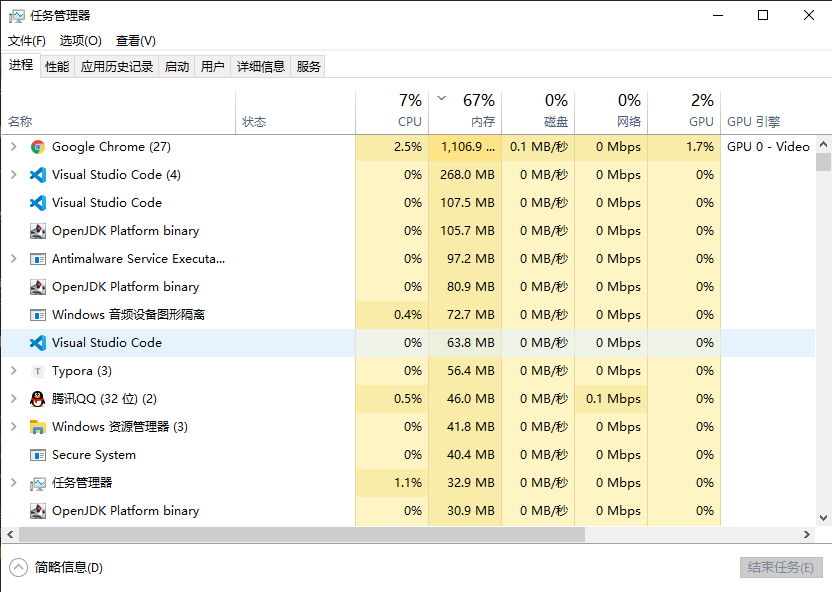

Java 并发基础常见面试题总结
1. 1. 什么是线程和进程?
1.1. 1.1. 何为进程?
进程是程序的一次执行过程，是系统运行程序的基本单位，因此进程是动态的。系统运行一个程序即是一个进程从创建，运行到消亡的过程。
在 Java 中，当我们启动 main 函数时其实就是启动了一个 JVM 的进程，而 main 函数所在的线程就是这个进程中的一个线程，也称主线程。
如下图所示，在 windows 中通过查看任务管理器的方式，我们就可以清楚看到 window 当前运行的进程（.exe 文件的运行）。

1.2. 1.2. 何为线程?
线程与进程相似，但线程是一个比进程更小的执行单位。一个进程在其执行的过程中可以产生多个线程。与进程不同的是同类的多个线程共享进程的堆和方法区资源，但每个线程有自己的程序计数器、虚拟机栈和本地方法栈，所以系统在产生一个线程，或是在各个线程之间作切换工作时，负担要比进程小得多，也正因为如此，线程也被称为轻量级进程。
Java 程序天生就是多线程程序，我们可以通过 JMX 来看一下一个普通的 Java 程序有哪些线程，代码如下。
public class MultiThread {
public static void main(String[] args) {
// 获取 Java 线程管理 MXBean
ThreadMXBean threadMXBean = ManagementFactory.getThreadMXBean();
// 不需要获取同步的 monitor 和 synchronizer 信息，仅获取线程和线程堆栈信息
ThreadInfo[] threadInfos = threadMXBean.dumpAllThreads(false, false);
// 遍历线程信息，仅打印线程 ID 和线程名称信息
for (ThreadInfo threadInfo : threadInfos) {
System.out.println("[" + threadInfo.getThreadId() + "] " + threadInfo.getThreadName());
}
}
}
上述程序输出如下（输出内容可能不同，不用太纠结下面每个线程的作用，只用知道 main 线程执行 main 方法即可）：
[5] Attach Listener //添加事件
[4] Signal Dispatcher // 分发处理给 JVM 信号的线程
[3] Finalizer //调用对象 finalize 方法的线程
[2] Reference Handler //清除 reference 线程
[1] main //main 线程,程序入口
从上面的输出内容可以看出：一个 Java 程序的运行是 main 线程和多个其他线程同时运行。
2. 2. 请简要描述线程与进程的关系,区别及优缺点？
从 JVM 角度说进程和线程之间的关系
2.1. 2.1. 图解进程和线程的关系
下图是 Java 内存区域，通过下图我们从 JVM 的角度来说一下线程和进程之间的关系。如果你对 Java 内存区域 (运行时数据区) 这部分知识不太了解的话可以阅读一下这篇文章：《可能是把 Java 内存区域讲的最清楚的一篇文章》

从上图可以看出：一个进程中可以有多个线程，多个线程共享进程的堆和方法区 (JDK1.8 之后的元空间)资源，但是每个线程有自己的程序计数器、虚拟机栈 和 本地方法栈。
总结： 线程 是 进程 划分成的更小的运行单位。线程和进程最大的不同在于基本上各进程是独立的，而各线程则不一定，因为同一进程中的线程极有可能会相互影响。线程执行开销小，但不利于资源的管理和保护；而进程正相反
下面是该知识点的扩展内容！
下面来思考这样一个问题：为什么程序计数器、虚拟机栈和本地方法栈是线程私有的呢？为什么堆和方法区是线程共享的呢？
2.2. 2.2. 程序计数器为什么是私有的?
程序计数器主要有下面两个作用：
- 字节码解释器通过改变程序计数器来依次读取指令，从而实现代码的流程控制，如：顺序执行、选择、循环、异常处理。
- 在多线程的情况下，程序计数器用于记录当前线程执行的位置，从而当线程被切换回来的时候能够知道该线程上次运行到哪儿了。
需要注意的是，如果执行的是 native 方法，那么程序计数器记录的是 undefined 地址，只有执行的是 Java 代码时程序计数器记录的才是下一条指令的地址。
所以，程序计数器私有主要是为了线程切换后能恢复到正确的执行位置。
2.3. 2.3. 虚拟机栈和本地方法栈为什么是私有的?
- 虚拟机栈： 每个 Java 方法在执行的同时会创建一个栈帧用于存储局部变量表、操作数栈、常量池引用等信息。从方法调用直至执行完成的过程，就对应着一个栈帧在 Java 虚拟机栈中入栈和出栈的过程。
- 本地方法栈： 和虚拟机栈所发挥的作用非常相似，区别是： 虚拟机栈为虚拟机执行 Java 方法 （也就是字节码）服务，而本地方法栈则为虚拟机使用到的 Native 方法服务。 在 HotSpot 虚拟机中和 Java 虚拟机栈合二为一。
所以，为了保证线程中的局部变量不被别的线程访问到，虚拟机栈和本地方法栈是线程私有的。
2.4. 2.4. 一句话简单了解堆和方法区
堆和方法区是所有线程共享的资源，其中堆是进程中最大的一块内存，主要用于存放新创建的对象 (所有对象都在这里分配内存)，方法区主要用于存放已被加载的类信息、常量、静态变量、即时编译器编译后的代码等数据。
3. 3. 说说并发与并行的区别?
- 并发： 同一时间段，多个任务都在执行 (单位时间内不一定同时执行)；
- 并行： 单位时间内，多个任务同时执行。
4. 4. 为什么要使用多线程呢?
先从总体上来说：
- 从计算机底层来说： 线程可以比作是轻量级的进程，是程序执行的最小单位,线程间的切换和调度的成本远远小于进程。另外，多核 CPU 时代意味着多个线程可以同时运行，这减少了线程上下文切换的开销。
- 从当代互联网发展趋势来说： 现在的系统动不动就要求百万级甚至千万级的并发量，而多线程并发编程正是开发高并发系统的基础，利用好多线程机制可以大大提高系统整体的并发能力以及性能。
再深入到计算机底层来探讨：
- 单核时代： 在单核时代多线程主要是为了提高 CPU 和 IO 设备的综合利用率。举个例子：当只有一个线程的时候会导致 CPU 计算时，IO 设备空闲；进行 IO 操作时，CPU 空闲。我们可以简单地说这两者的利用率目前都是 50%左右。但是当有两个线程的时候就不一样了，当一个线程执行 CPU 计算时，另外一个线程可以进行 IO 操作，这样两个的利用率就可以在理想情况下达到 100%了。
- 多核时代: 多核时代多线程主要是为了提高 CPU 利用率。举个例子：假如我们要计算一个复杂的任务，我们只用一个线程的话，CPU 只会一个 CPU 核心被利用到，而创建多个线程就可以让多个 CPU 核心被利用到，这样就提高了 CPU 的利用率。
5. 5. 使用多线程可能带来什么问题?
并发编程的目的就是为了能提高程序的执行效率提高程序运行速度，但是并发编程并不总是能提高程序运行速度的，而且并发编程可能会遇到很多问题，比如：内存泄漏、上下文切换、死锁还有受限于硬件和软件的资源闲置问题。
6. 6. 说说线程的生命周期和状态?
Java 线程在运行的生命周期中的指定时刻只可能处于下面 6 种不同状态的其中一个状态（图源《Java 并发编程艺术》4.1.4 节）。

线程在生命周期中并不是固定处于某一个状态而是随着代码的执行在不同状态之间切换。Java 线程状态变迁如下图所示（图源《Java 并发编程艺术》4.1.4 节）：

由上图可以看出：线程创建之后它将处于 NEW（新建） 状态，调用 start() 方法后开始运行，线程这时候处于 READY（可运行） 状态。可运行状态的线程获得了 CPU 时间片（timeslice）后就处于 RUNNING（运行） 状态。
操作系统隐藏 Java 虚拟机（JVM）中的 RUNNABLE 和 RUNNING 状态，它只能看到 RUNNABLE 状态（图源：HowToDoInJava：Java Thread Life Cycle and Thread States），所以 Java 系统一般将这两个状态统称为 RUNNABLE（运行中） 状态 。

当线程执行 wait()方法之后，线程进入 WAITING（等待） 状态。进入等待状态的线程需要依靠其他线程的通知才能够返回到运行状态，而 TIME_WAITING(超时等待) 状态相当于在等待状态的基础上增加了超时限制，比如通过 sleep（long millis）方法或 wait（long millis）方法可以将 Java 线程置于 TIMED WAITING 状态。当超时时间到达后 Java 线程将会返回到 RUNNABLE 状态。当线程调用同步方法时，在没有获取到锁的情况下，线程将会进入到 BLOCKED（阻塞） 状态。线程在执行 Runnable 的run()方法之后将会进入到 TERMINATED（终止） 状态。
7. 7. 什么是上下文切换?
多线程编程中一般线程的个数都大于 CPU 核心的个数，而一个 CPU 核心在任意时刻只能被一个线程使用，为了让这些线程都能得到有效执行，CPU 采取的策略是为每个线程分配时间片并轮转的形式。当一个线程的时间片用完的时候就会重新处于就绪状态让给其他线程使用，这个过程就属于一次上下文切换。
概括来说就是：当前任务在执行完 CPU 时间片切换到另一个任务之前会先保存自己的状态，以便下次再切换回这个任务时，可以再加载这个任务的状态。任务从保存到再加载的过程就是一次上下文切换。
上下文切换通常是计算密集型的。也就是说，它需要相当可观的处理器时间，在每秒几十上百次的切换中，每次切换都需要纳秒量级的时间。所以，上下文切换对系统来说意味着消耗大量的 CPU 时间，事实上，可能是操作系统中时间消耗最大的操作。
Linux 相比与其他操作系统（包括其他类 Unix 系统）有很多的优点，其中有一项就是，其上下文切换和模式切换的时间消耗非常少。
8. 8. 什么是线程死锁?如何避免死锁?
8.1. 8.1. 认识线程死锁
多个线程同时被阻塞，它们中的一个或者全部都在等待某个资源被释放。由于线程被无限期地阻塞，因此程序不可能正常终止。
如下图所示，线程 A 持有资源 2，线程 B 持有资源 1，他们同时都想申请对方的资源，所以这两个线程就会互相等待而进入死锁状态。

下面通过一个例子来说明线程死锁,代码模拟了上图的死锁的情况 (代码来源于《并发编程之美》)：
public class DeadLockDemo {
private static Object resource1 = new Object();//资源 1
private static Object resource2 = new Object();//资源 2
public static void main(String[] args) {
new Thread(() -> {
synchronized (resource1) {
System.out.println(Thread.currentThread() + "get resource1");
try {
Thread.sleep(1000);
} catch (InterruptedException e) {
e.printStackTrace();
}
System.out.println(Thread.currentThread() + "waiting get resource2");
synchronized (resource2) {
System.out.println(Thread.currentThread() + "get resource2");
}
}
}, "线程 1").start();
new Thread(() -> {
synchronized (resource2) {
System.out.println(Thread.currentThread() + "get resource2");
try {
Thread.sleep(1000);
} catch (InterruptedException e) {
e.printStackTrace();
}
System.out.println(Thread.currentThread() + "waiting get resource1");
synchronized (resource1) {
System.out.println(Thread.currentThread() + "get resource1");
}
}
}, "线程 2").start();
}
}
Output
Thread[线程 1,5,main]get resource1
Thread[线程 2,5,main]get resource2
Thread[线程 1,5,main]waiting get resource2
Thread[线程 2,5,main]waiting get resource1
线程 A 通过 synchronized (resource1) 获得 resource1 的监视器锁，然后通过Thread.sleep(1000);让线程 A 休眠 1s 为的是让线程 B 得到执行然后获取到 resource2 的监视器锁。线程 A 和线程 B 休眠结束了都开始企图请求获取对方的资源，然后这两个线程就会陷入互相等待的状态，这也就产生了死锁。上面的例子符合产生死锁的四个必要条件。
学过操作系统的朋友都知道产生死锁必须具备以下四个条件：
- 互斥条件：该资源任意一个时刻只由一个线程占用。
- 请求与保持条件：一个进程因请求资源而阻塞时，对已获得的资源保持不放。
- 不剥夺条件:线程已获得的资源在末使用完之前不能被其他线程强行剥夺，只有自己使用完毕后才释放资源。
- 循环等待条件:若干进程之间形成一种头尾相接的循环等待资源关系。
8.2. 8.2. 如何避免线程死锁?
我们只要破坏产生死锁的四个条件中的其中一个就可以了。
破坏互斥条件
这个条件我们没有办法破坏，因为我们用锁本来就是想让他们互斥的（临界资源需要互斥访问）。
破坏请求与保持条件
一次性申请所有的资源。
破坏不剥夺条件
占用部分资源的线程进一步申请其他资源时，如果申请不到，可以主动释放它占有的资源。
破坏循环等待条件
靠按序申请资源来预防。按某一顺序申请资源，释放资源则反序释放。破坏循环等待条件。
我们对线程 2 的代码修改成下面这样就不会产生死锁了。
new Thread(() -> {
synchronized (resource1) {
System.out.println(Thread.currentThread() + "get resource1");
try {
Thread.sleep(1000);
} catch (InterruptedException e) {
e.printStackTrace();
}
System.out.println(Thread.currentThread() + "waiting get resource2");
synchronized (resource2) {
System.out.println(Thread.currentThread() + "get resource2");
}
}
}, "线程 2").start();
Output
Thread[线程 1,5,main]get resource1
Thread[线程 1,5,main]waiting get resource2
Thread[线程 1,5,main]get resource2
Thread[线程 2,5,main]get resource1
Thread[线程 2,5,main]waiting get resource2
Thread[线程 2,5,main]get resource2
Process finished with exit code 0
我们分析一下上面的代码为什么避免了死锁的发生?
线程 1 首先获得到 resource1 的监视器锁,这时候线程 2 就获取不到了。然后线程 1 再去获取 resource2 的监视器锁，可以获取到。然后线程 1 释放了对 resource1、resource2 的监视器锁的占用，线程 2 获取到就可以执行了。这样就破坏了破坏循环等待条件，因此避免了死锁。
9. 9. 说说 sleep() 方法和 wait() 方法区别和共同点?
- 两者最主要的区别在于：sleep 方法没有释放锁，而 wait 方法释放了锁 。
- 两者都可以暂停线程的执行。
- Wait 通常被用于线程间交互/通信，sleep 通常被用于暂停执行。
- wait() 方法被调用后，线程不会自动苏醒，需要别的线程调用同一个对象上的 notify() 或者 notifyAll() 方法。sleep() 方法执行完成后，线程会自动苏醒。或者可以使用 wait(long timeout)超时后线程会自动苏醒。
10. 10. 为什么我们调用 start() 方法时会执行 run() 方法，为什么我们不能直接调用 run() 方法？
这是另一个非常经典的 java 多线程面试问题，而且在面试中会经常被问到。很简单，但是很多人都会答不上来！
new 一个 Thread，线程进入了新建状态;调用 start() 方法，会启动一个线程并使线程进入了就绪状态，当分配到时间片后就可以开始运行了。 start() 会执行线程的相应准备工作，然后自动执行 run() 方法的内容，这是真正的多线程工作。 而直接执行 run() 方法，会把 run 方法当成一个 main 线程下的普通方法去执行，并不会在某个线程中执行它，所以这并不是多线程工作。
总结： 调用 start 方法方可启动线程并使线程进入就绪状态，而 run 方法只是 thread 的一个普通方法调用，还是在主线程里执行。